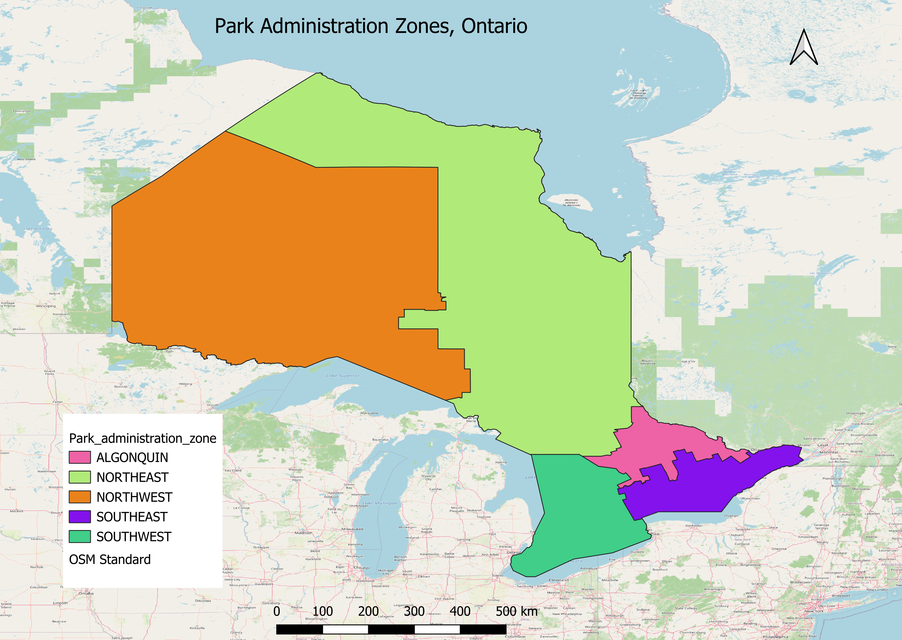
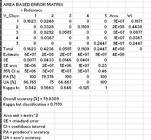

Introductory Remote Sensing Analysis
Course
The Future of Earth from Satellites – Lakehead University
Project Overview
This project demonstrates foundational GIS and remote sensing skills developed through a micro-credential course. It includes map layout design, feature digitization, and introductory land cover classification using QGIS.
Skills Demonstrated
- Raster and vector data handling
- Satellite image interpretation
- Manual digitization
- Supervised classification (introductory)
- Cartographic layout design
Lab 1: Administrative Boundary Map
Created a basic map layout using administrative boundary data, including essential cartographic elements such as legend, scale bar, and title.

Lab 2: Image Digitization
Digitized selected features from satellite imagery to understand spatial data creation and feature extraction workflows.

Lab 3: Land Cover Classification
Performed an introductory supervised classification using QGIS (SCP). Training samples were created to classify land cover types.

Accuracy Assessment
The classification result was evaluated using a confusion (error) matrix. The overall accuracy achieved was 79.83%, indicating strong agreement between classified results and reference samples.

Note: This was a learning exercise focused on workflow understanding rather than high classification accuracy.
Key Learning
- Understanding complete GIS workflow from data to output
- Working with satellite imagery in QGIS
- Creating map-based visualizations
Limitations
- Limited training samples affected classification accuracy
- Small-scale exercises focused on learning concepts
Future Improvements
- Improve classification accuracy